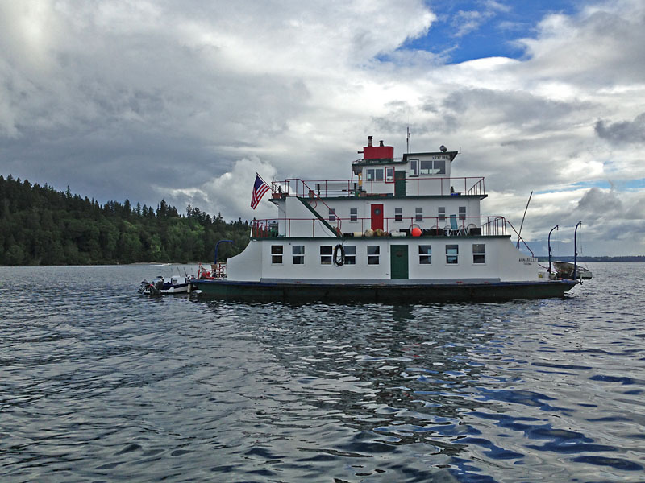
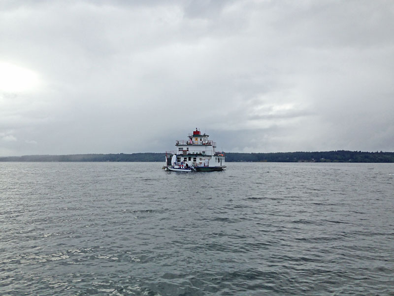
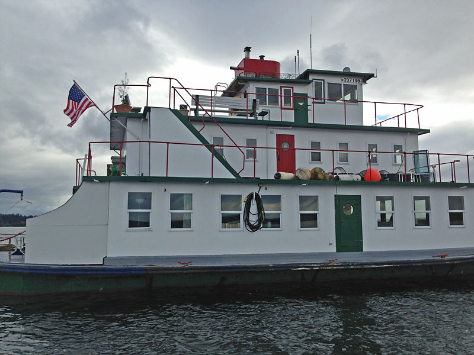
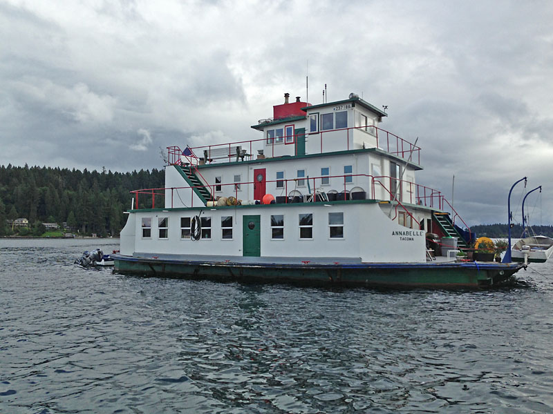

|
Email from Kevin Tighe:
I was driving around the Sound near Purdy yesterday, and was stunned to see the old Herron Island Ferry, the Annabelle S, built up to this amazing looking vessel! The last time I saw it around the Sound it was definitely not kept up well, and looked very run down. Looks pretty amazing right now - I only talked to her captain for a few minutes but it was very interesting!
So, I took some shots and thought I would share them with the Herron Island community!




|